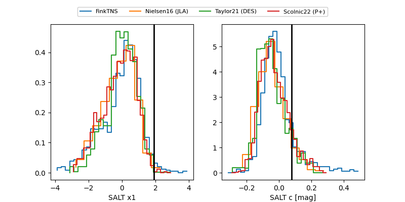

FINK: ZTF25aboftol
Lasair: ZTF25aboftol
ALeRCE: ZTF25aboftol
TNS: 2025wiu
YSE: 2025wiu
ZTF25aboftol (ztf,fink)
2025wiu (tns,yse)
ATLAS25ljr (atlas)
equatorial (ra, dec) = (28.9937,-0.44542)
galactic (l, b) = (155.7376,-59.14337)

last atlasc=18.87, atlaso=18.56, ztfg=18.76, ztfr=18.56
1 atlasc, 4 atlaso, 4 ztfg, 6 ztfr detections